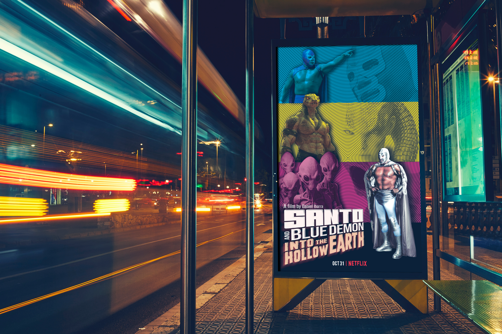
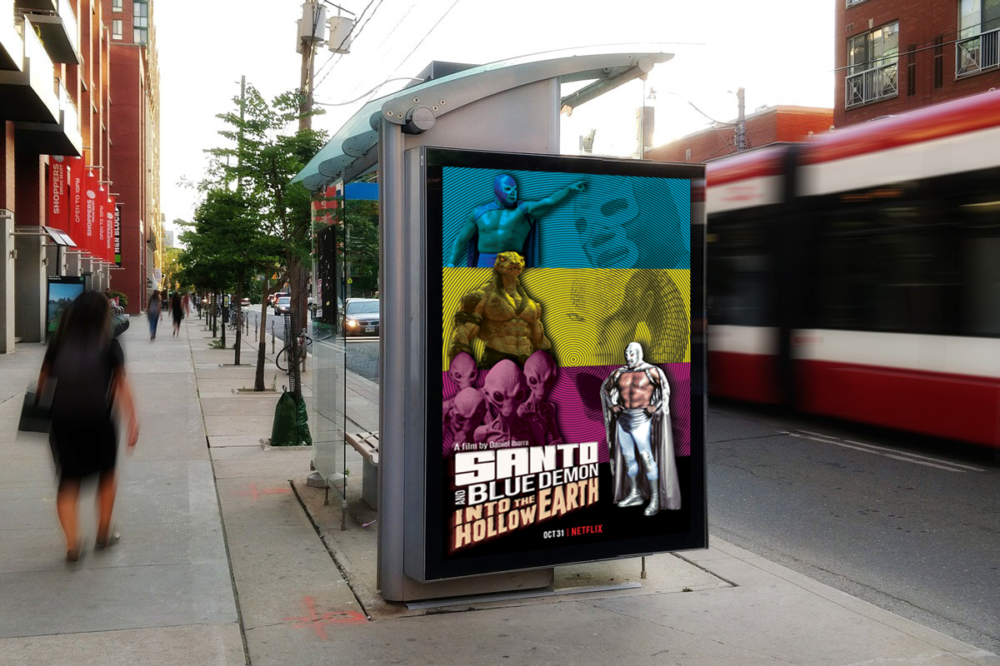
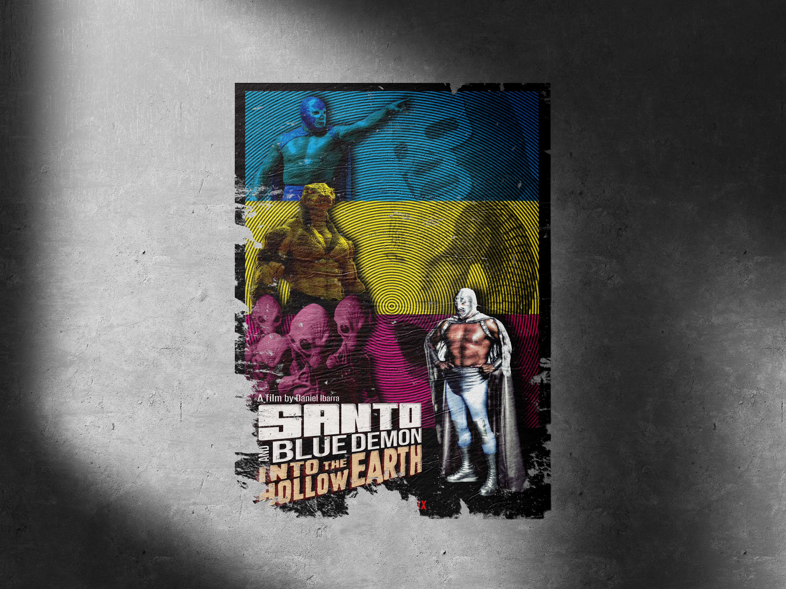
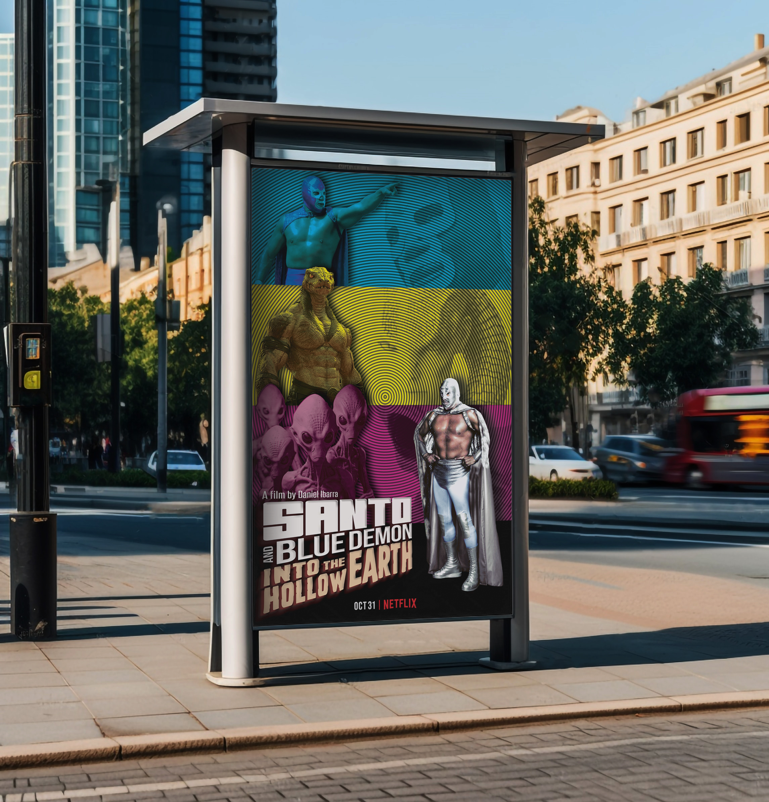
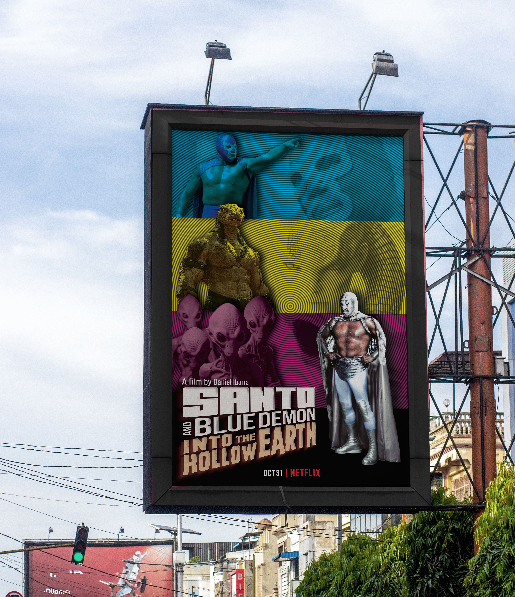
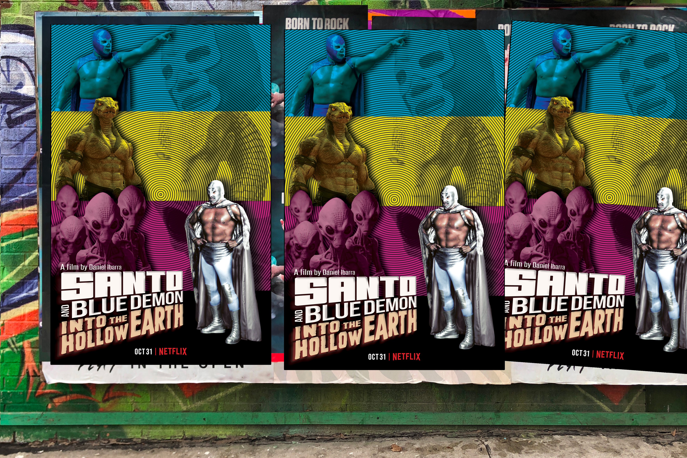
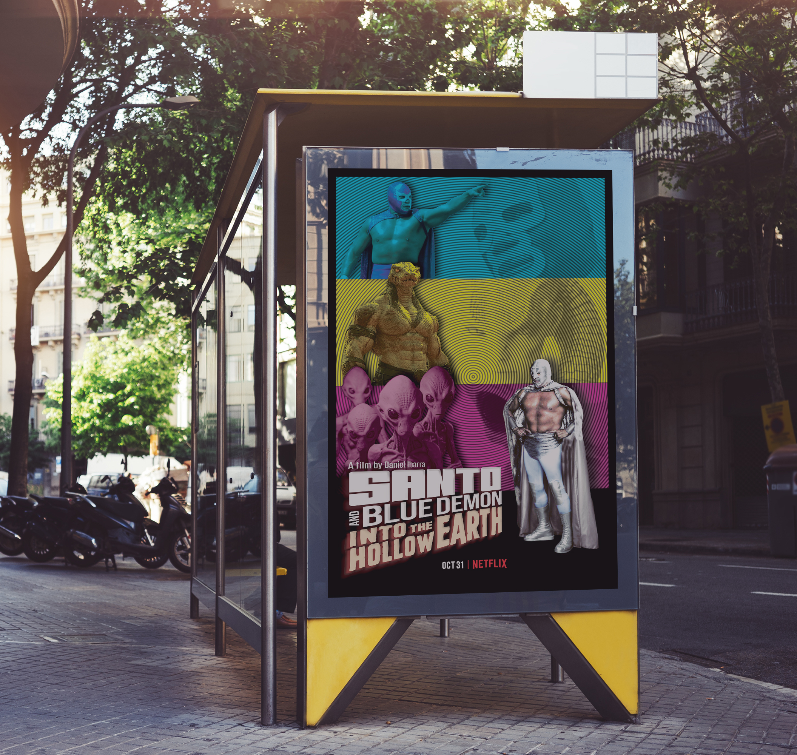
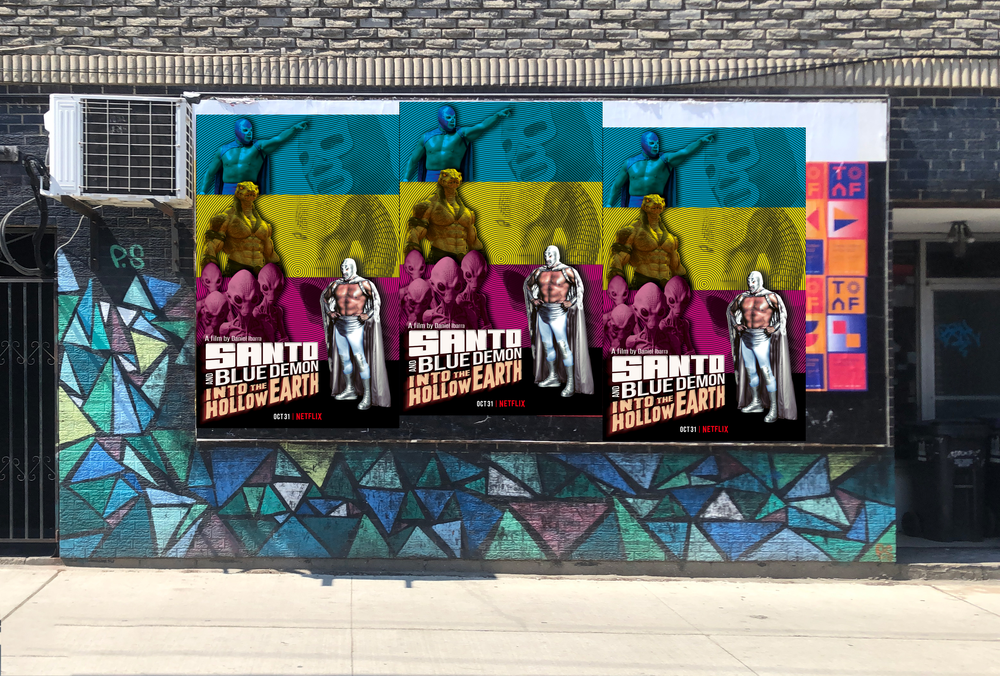

Daniel Ibarra | Portafolio Website Project








SANTO | Movie Poster
This project was an exciting design challenge for my Adobe Photoshop class, where I had the opportunity to create a movie poster for a fictional production. The concept is based on an action and sci-fi film that pays homage to the legendary Mexican luchadores El Santo & Blue Demon. The goal was to merge the classic luchador movie style with a modern aesthetic, creating a poster that was attractive, dynamic, and told a visual story.
The poster's design is structured into three horizontal stripes of bright colors: cyan, yellow, and magenta, which not only create a strong visual impact but also act as a vibrant, retro color palette. The top stripe features Blue Demon in a heroic pose, ready for action. The central stripe highlights the antagonists, a reptilian creature and a horde of aliens, elements that suggest a fantastic adventure. In the bottom stripe, El Santo stands as the main hero, with his iconic silver mask and a powerful pose.
A distinctive design element is the use of a concentric circular pattern in the background stripes, which evokes a sense of movement and energy, as if the characters are emerging from a vortex or an unknown dimension. The movie's title, 'Santo & Blue Demon: Into the Hollow Earth,' is presented in large, bold typography at the bottom, reinforcing the pulp adventure atmosphere. The poster also includes fictional credits and a release date to give it a touch of realism.
This project allowed me to explore the creation of a complex visual narrative in a single frame, combining iconic characters, sci-fi elements, and bold graphic design to produce a memorable piece that evokes the nostalgia and excitement of lucha libre cinema.